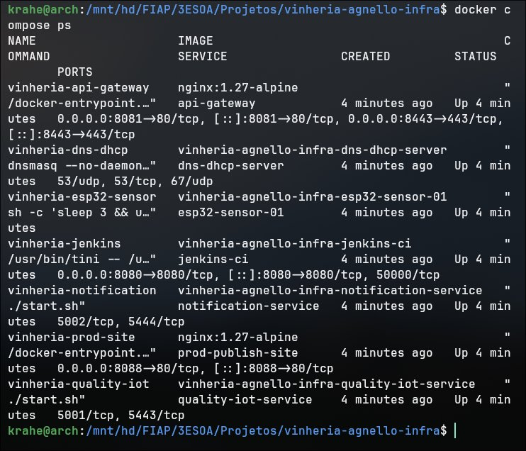
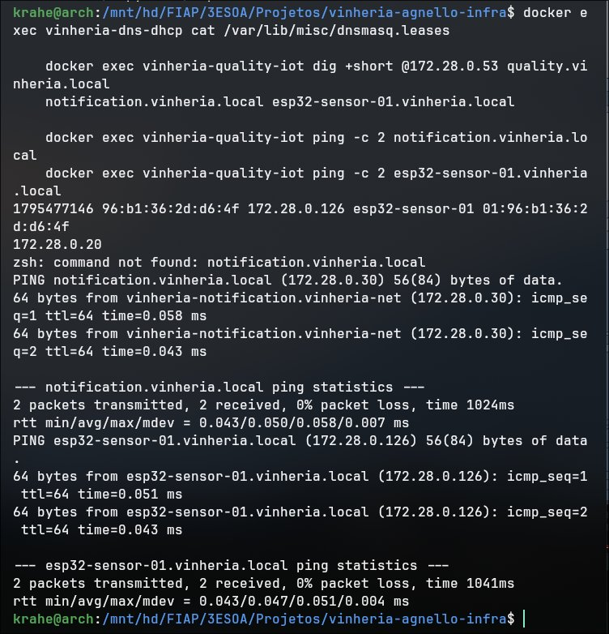
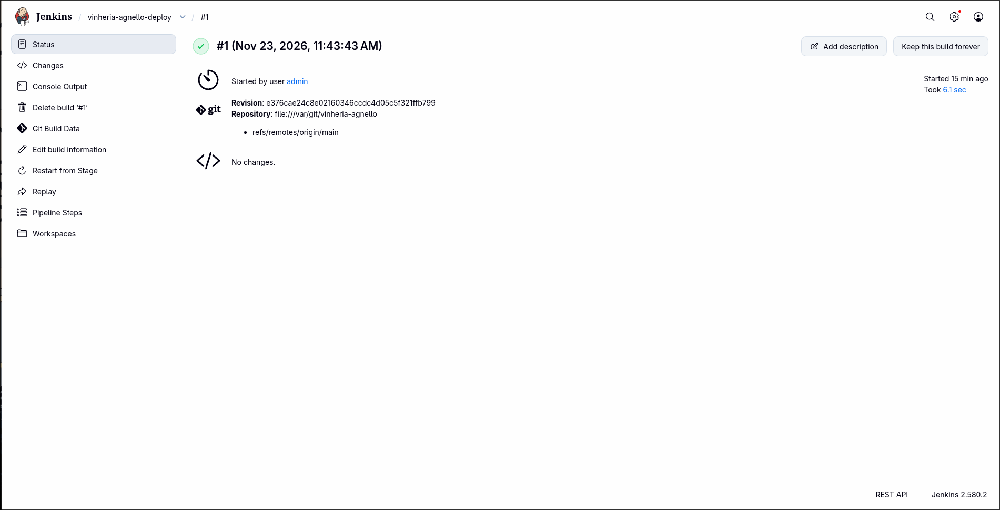
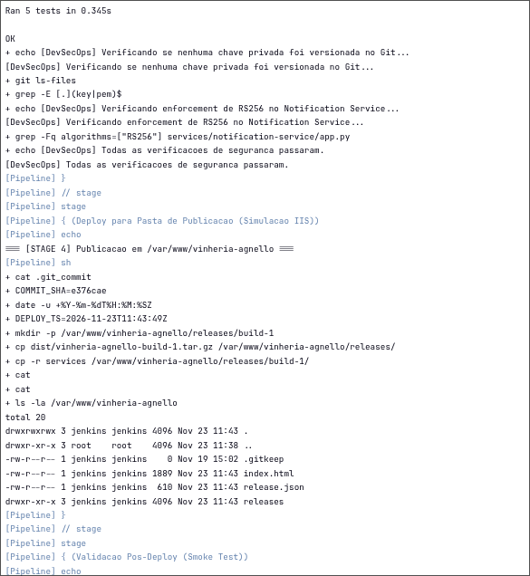
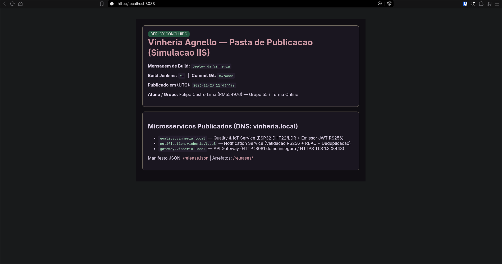
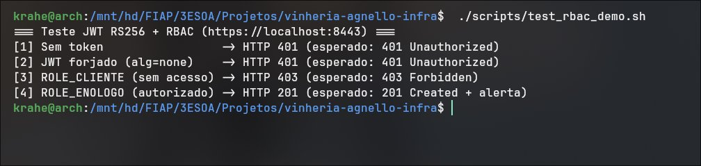
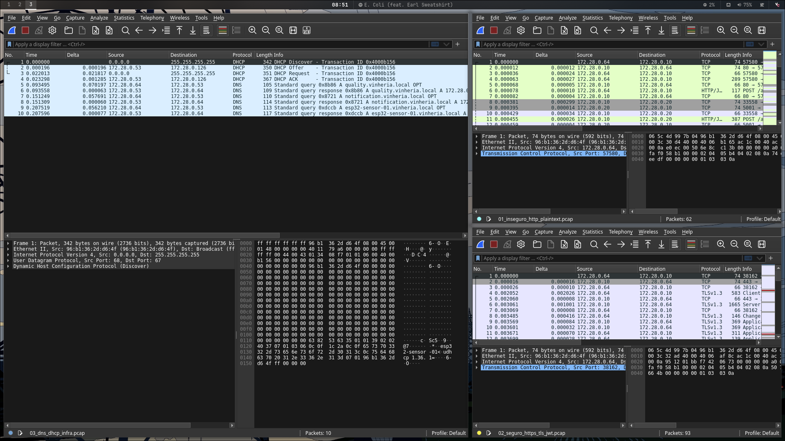
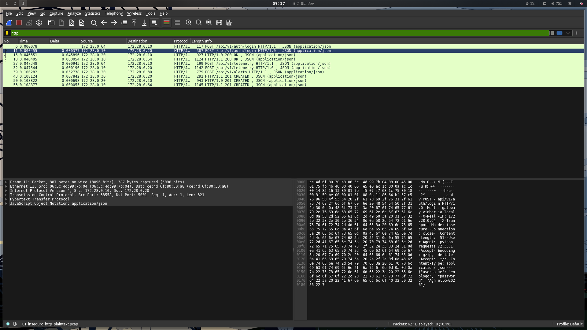

| Campo | Valor |
|---|---|
| Aluno | Felipe Castro Lima |
| RM | rm554976 |
| Turma / Grupo | Turma Online — Grupo 55 (Fase 7) |
| Base Arquitetural | FelipeCastroLima_rm554976_TurmaOnline_fase6_atividade.docx + Entrega_FIAP_Vinheria_Agnello_Grupo55.zip |
| Repositório GitHub | https://github.com/8felipekr/vinheria-agnello-devops (branch main) |
A partir dos seis microsserviços modelados na Fase 6, foram implementados os dois domínios diretamente integrados à camada IoT do Grupo 55 (ESP32 DevKit V1 + DHT22 no GPIO 4 + LDR no GPIO 34 ADC1):
quality.vinheria.local — 172.28.0.20): recebe telemetria JSON (temperatura, umidade, luminosidade), aplica as regras bioquímicas da adega (cinética de Arrhenius > 16 °C / crítico > 18 °C, desidratação de rolha < 60% / crítico < 55%, risco fitoquímico Goût de Lumière > 15% / crítico > 30%), persiste leituras em banco SQLite próprio (Database per Service), emite tokens JWT assinados com RS256 (/.well-known/jwks.json) e despacha o evento AlertaQualidadeTermicaDisparado para o Notification Service.notification.vinheria.local — 172.28.0.30): expõe /api/v1/alerts, valida assinatura assimétrica RS256 do JWT e políticas RBAC, deduplica eventos por eventId e persiste o histórico em banco SQLite isolado (Database per Service).Toda a infraestrutura opera na rede bridge isolada vinheria-net (172.28.0.0/24, interface host dedicada br-vinheria para captura limpa no Wireshark), com o serviço dnsmasq atuando como DNS autoritativo da zona vinheria.local e servidor DHCP (172.28.0.100–150):
HOST (Wireshark na interface br-vinheria)
│
┌────────────────┬───────────────┼───────────────┬────────────────┐
│ :8081 (HTTP) │ :8443 (HTTPS) │ :8080 (HTTP) │ :8088 (HTTP) │
▼ ▼ ▼ ▼ │
┌─────────────────────────────────────────────────────────────────────────┴───┐
│ Rede Docker vinheria-net (172.28.0.0/24) │
│ │
│ dns-dhcp-server (172.28.0.53) ◄── DHCP DORA (.100-.150) ── esp32-sensor-01 │
│ • DNS autoritativo vinheria.local (172.28.0.126) │
│ • Registro DNS dinâmico via leases DHCP │ │
│ ▲ │ REST │
│ │ UDP/53 ▼ │
│ api-gateway (172.28.0.10 - Nginx) │
│ • :80 HTTP (Demo Insegura) ──► quality.vinheria.local (172.28.0.20) │
│ • :443 HTTPS (TLS 1.3 Seguro) ──► └──► notification.vinheria.local │
│ (172.28.0.30) [HTTP :5002 / │
│ HTTPS :5444] │
│ jenkins-ci (172.28.0.40) ──► volume /var/www/vinheria-agnello │
│ ──► prod-publish-site (172.28.0.50, IIS) │
└─────────────────────────────────────────────────────────────────────────────┘

/var/lib/misc/dnsmasq.leases:```text
1795477146 96:b1:36:2d:d6:4f 172.28.0.126 esp32-sensor-01 01:96:b1:36:2d:d6:4f
```
captures/03_dns_dhcp_infra.pcap, Transaction ID 0x4000b156):```text
1 0.000000 0.0.0.0 -> 255.255.255.255 DHCP Discover (Transaction ID 0x4000b156)
2 0.000196 172.28.0.53 -> 172.28.0.126 DHCP Offer
3 0.022013 0.0.0.0 -> 255.255.255.255 DHCP Request
4 0.023298 172.28.0.53 -> 172.28.0.126 DHCP ACK (IP 172.28.0.126, DNS 172.28.0.53, dom vinheria.local)
5 0.093495 172.28.0.64 -> 172.28.0.53 DNS Query A quality.vinheria.local
6 0.093558 172.28.0.53 -> 172.28.0.64 DNS Response A 172.28.0.20
7 0.151249 172.28.0.64 -> 172.28.0.53 DNS Query A notification.vinheria.local
8 0.151309 172.28.0.53 -> 172.28.0.64 DNS Response A 172.28.0.30
9 0.207519 172.28.0.64 -> 172.28.0.53 DNS Query A esp32-sensor-01.vinheria.local
10 0.207596 172.28.0.53 -> 172.28.0.64 DNS Response A 172.28.0.126
```

O repositório Git (main, sincronizado em https://github.com/8felipekr/vinheria-agnello-devops) versiona os microsserviços, os testes unitários (tests/test_services.py), a infraestrutura Docker (docker-compose.yml) e o pipeline declarativo (Jenkinsfile). O servidor Jenkins (jenkins/jenkins:lts-jdk21) é provisionado via scripts Groovy em init.groovy.d/ e executa o fluxo abaixo a cada disparo:
[Repositório Git (main)]
│ 1. Checkout SCM (revisão e376cae)
▼
[Stage 2: Build] ──► echo "Deploy da Vinheria" + py_compile + tar.gz versionado
│
▼
[Stage 3: Testes & DevSecOps] ──► unittest (5/5 OK) + bloqueio de .key/.pem + check RS256
│
▼
[Stage 4: Deploy (Simulação IIS)] ──► publica index.html, release.json e artefatos
│ em /var/www/vinheria-agnello (deploy/wwwroot)
▼
[Stage 5: Smoke Test Pós-Deploy] ──► DNS @172.28.0.53 + HTTP 200 (prod-site) + HTTPS TLS 1.3 (gateway)
Jenkinsfile e Evidências da Execução (Build #1 — SUCCESS)| Estágio | Ações Executadas | Evidência Verificada |
|---|---|---|
| 1. Checkout | Clone Git da branch main (file:///var/git/vinheria-agnello) | Revisão e376cae (6.1 sec total) |
| 2. Build | Executa echo "Deploy da Vinheria", python3 -m py_compile nos microsserviços e empacota tarball versionado | dist/vinheria-agnello-build-1.tar.gz |
| 3. Testes & DevSecOps | Executa unittest (regras enológicas + JWT RS256 + RBAC + deduplicação), verifica ausência de .key/.pem no Git e enforcement de RS256 | Ran 5 tests in 0.345s — OK |
| 4. Deploy (Simulação IIS) | Publica index.html, release.json, pacote .tar.gz e código dos serviços em /var/www/vinheria-agnello (./deploy/wwwroot) | Publicado em 2026-11-23T11:43:49Z e servido em http://localhost:8088 |
| 5. Smoke Test Pós-Deploy | Resolve prod-site.vinheria.local e gateway.vinheria.local via DNS 172.28.0.53 e valida HTTP 200 e HTTPS TLS 1.3 /health | status: PUBLISHED e tls: true |



esp32-sensor-01 -> api-gateway -> quality-iot-service) quanto no tráfego leste-oeste entre microsserviços (quality-iot-service -> notification-service, com validação de certificado da CA interna e SNI notification.vinheria.local)./.well-known/jwks.json. Na chamada leste-oeste, o quality-iot-service emite um token de serviço de curta duração (ROLE_SERVICE_QUALITY, 5 min).| Teste de Segurança Executado | Resultado Esperado | Resultado Observado |
|---|---|---|
POST /api/v1/telemetry sem header Authorization | 401 Unauthorized | HTTP 401 |
POST /api/v1/telemetry com JWT adulterado (alg: none) | 401 Unauthorized | HTTP 401 |
POST /api/v1/telemetry autenticado como ROLE_CLIENTE | 403 Forbidden | HTTP 403 |
POST /api/v1/telemetry autenticado como ROLE_ENOLOGO (leitura crítica 19.8 °C, 52.4%, 18.5%) | 201 Created + alerta em notification-service | HTTP 201 (ALERT_DISPATCHED) |

| Critério Analisado | Cenário Inseguro (01_inseguro_http_plaintext.pcap) | Cenário Seguro (02_seguro_https_tls_jwt.pcap) |
|---|---|---|
| Portas / Protocolo | HTTP texto claro (:80, :5001, :5002) | HTTPS TLS 1.3 (:443, :5443, :5444) |
| Credenciais de Login | EXPOSTAS em texto puro (Frame 11): {"username": "enologo", "password": "Agnello@2026"} | Cifradas (Application Data) — 0 ocorrências |
Token JWT (Bearer) | EXPOSTO em texto puro no tráfego externo e interno (172.28.0.20 -> 172.28.0.30), permitindo sequestro de sessão (replay attack) | Cifrado ponta a ponta — 0 ocorrências |
| Payload de Telemetria/Alerta | EXPOSTO em texto puro (ADEGA-BARRIQUE-03, temperatura: 19.8, AlertaQualidadeTermicaDisparado) | Cifrado ponta a ponta — 0 ocorrências |


dnsmasq) e o IPAM do Docker: ao simular um servidor DHCP dentro de uma rede bridge Docker (172.28.0.0/24), foi necessário segmentar explicitamente as faixas (172.28.0.64/27 para alocação do Docker, IPs fixos .10–.53 para serviços centrais e .100–.150 exclusivos para o pool DHCP) e implementar um hook (dhcp-hook.sh) para aplicar o IP concedido ao esp32-sensor-01 sem sobrescrever a rota primária do container.GitSCM.ALLOW_LOCAL_CHECKOUT (mecanismo contra leitura indevida do filesystem do servidor). A solução exigiu habilitar explicitamente a propriedade controlada via JAVA_OPTS no container de laboratório, além de automatizar o provisionamento de plugins e credenciais via init.groovy.d/ para tornar o ambiente 100% reprodutível.br-<hash>) e permissões manuais no host, fixou-se o nome da interface em br-vinheria no docker-compose.yml e manteve-se cada microsserviço ouvindo simultaneamente em HTTP (inseguro) e HTTPS (seguro), permitindo comparação controlada no mesmo ambiente.gateway.vinheria.local, quality.vinheria.local, notification.vinheria.local) exigiu garantir que o .gitignore e o próprio estágio de DevSecOps do Jenkins bloqueassem o versionamento de qualquer arquivo .key ou .pem antes da publicação no GitHub.alg=none), mas não oculta o conteúdo trafegado. Sem TLS 1.3, um atacante passivo captura tanto a senha no login (Frame 11) quanto o token Bearer válido para reutilização (replay attack). Somente a combinação TLS 1.3 + JWT RS256 + RBAC protege simultaneamente confidencialidade, integridade e controle de acesso.notification.vinheria.local, quality.vinheria.local) e integrar leases DHCP ao DNS reduziu o acoplamento a IPs fixos, aproximando o laboratório da prática real de Service Discovery em produção.Jenkinsfile transformou o deploy de um processo manual sujeito a erros em um fluxo auditável, repetível e seguro.